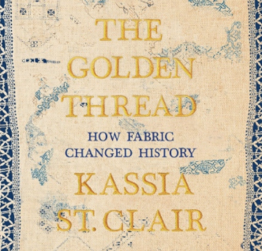
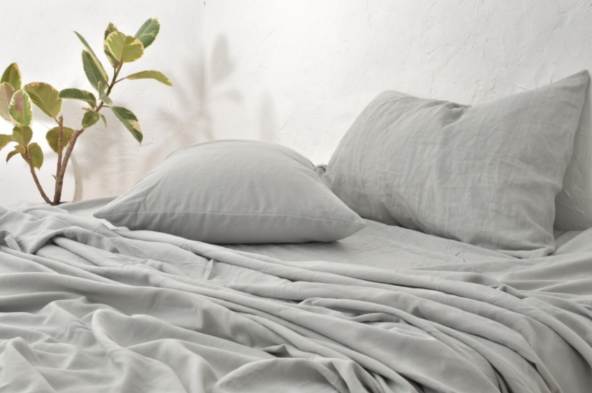
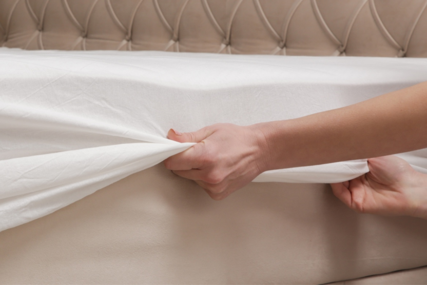
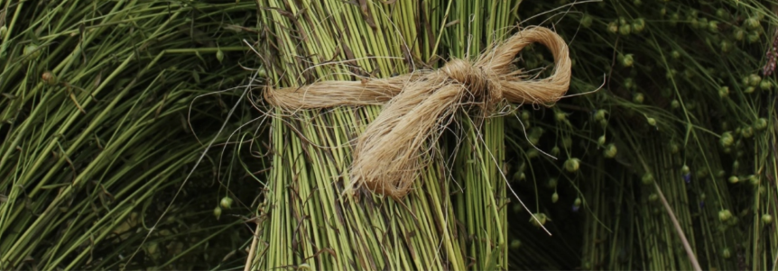
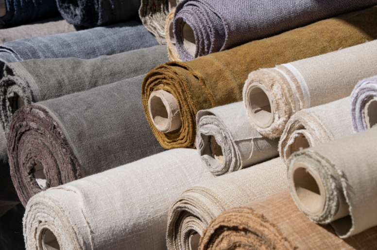
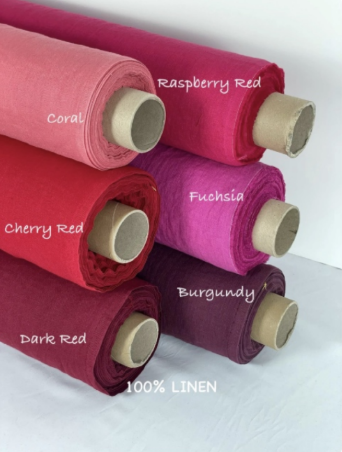
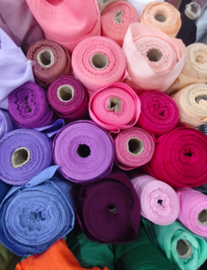

How do we get from flax to linen?
Linen is grown from flax seeds, possible in most places but it thrives where river deposits replenish the soil each year. Sown predominantly in Belgium, France, Ireland, the Nile valley, the Baltic lands and the Netherlands around the end of March. These regions are where the silty soil and oceanic climate is ideal for the plant. This results in linen fibers that feel crisp, smooth, and airy in the final product.
It is a fast growing plant. Towards the end of the growing period, it will grow a full 2 inches per day. As it grows it has the color of sand on a cloudy day.
At three months is when the flax plant first shows its true splendor, as it flowers and blooms and turns the fields into a light blue sea. The flax plants are a little over three feet tall at this point with each stem carrying up to 100 flowers.
Whereas cotton, silk and wool are pretty much ready for spinning soon after growth, for a flax crop to be ready for basic spinning, some hard work has to happen. Pulling occurs about five weeks after flowering and is called “pulling” rather than harvesting because the flax is literally pulled out of the ground rather than cut down, in order to preserve the length of the fibers.
The following are all procedures to turn flax into a weavable thread. The stooking, rippling, retting, scutching, hackling, combing and spinning, all occur before weaving. Suffice it to say the procedures are carefully and lovingly done by linen manufacturers and smaller cottage industries.
Weaving is done where the art of weaving has been perfected over generations, with some linen manufacturers using textile mills, but also home looms are used.
For more information on flax and growing, linen history and production do look at these 2 books.
The Golden Thread: How Fabric changed History.
by Kassia St. Clair, Helen Johns, et al.
Fabric: The Hidden History of the Material World, by Victoria Finlay.
These 2 books concern many fabrics and their associated history, with excellent chapters devoted to linen.
Linen and Cotton - the differences

Both linen and cotton are prevalent especially in warm climates, where breathability is paramount. Both of these are thousands of years old but linen dates from 26,000 years ago, with cotton dating from 6000 years ago.
In comparing cotton and linen we find that :-
*cotton is softer than linen at the outset but wears out sooner than linen. *Linen is rougher at the outset but softens with each wash and lasts a very long time. *The quality of wicking in linen means it is eminently more comfortable in hot climates than cotton
*The absorbability of linen is often overlooked until one uses towels of linen. Beautifully thin and packable, they are very appealing.
Effects of the growing flax on the environment
After years of being spurned by manmade fabrics or cotton, once again linen is being valued. Now not only is flax grown for fine fabrics, it is easier on the land.
*It needs little irrigation- often none other than rainfall, few pesticides and fertilizers. *Crops are rotated.
*Flax captures significant amounts of carbon dioxide (often considered carbon-negative, or even a positive effect)
*Flax is close to zero waste in that almost all parts of the plant are used. eg The long fibers are used for fine fabrics with the shorter Tow fibers being sued for insulation materials and industrial composites. Seeds are used for flaxseed oil or added to hot packs for skin. * Untreated linen is biodegradable
The appeal of Linen
There is no doubt that the appeal of linen is high in the warm climates. That breathability and the wonderful feel in thot weather is also accompanied with a more casual look. This is not a fabric lending itself to formal wear, nor is it conducive to wear in cold climates.
Although there is an appeal to the casual nature of creased garments, frocks and shirts do also take well to the iron, still maintaining that casual and relaxed look
Biblical guidelines
In the Bible we find a series of laws that delineate boundaries, clothing not made sha’atnez, with mixed fibers of wool and linen. The prohibition is mentioned in Deuteronomy and Leviticus. A garment of wool worn OVER a garment of linen is permitted, just not mixing the fibers into one garment, The possible origin of the prohibition is the symbolic mixing of the agricultural economy of Egypt with pastoral economy of Jewish tribes. Today, some companies label compliant products with “sha’atnez-free” tags
Linen conferences, biennale, museums of flax and linen
In exploring avenues for gatherings of lovers of linen, look for words such as biennale, textile, fiber art, conference. Ireland, Canada, USA, France, Italy, Australia, feature gatherings or museums inclusive of or devoted to flax and linen.
It is no wonder that such conferences become more prevalent as the interest in all aspects of linen and flax grows.
As an introduction to hand weaver Jo Andrews’ Haptic and Hue podcast, it is said that…
Linen has walked the long centuries alongside mankind. In Europe and Western Asia, its cultivation reaches back thousands of years to the beginning of human settlement and farming. It powered the ships of ancient Greece and Troy, it is mentioned more than 80 times in the Old Testament. This is the fabric that wrapped the Dead Sea Scrolls to keep them safe down the centuries.
You might listen to this episode of a podcast with Jo Andrews who interviews guests involved in linen and flax in Ireland. It includes Fiona McKelvey and Helen Keyes being interviewed in the Haptic & Hue podcast in 2024

The Linen closet, the “Bed linen” department of stores, the generic use of the word linen
A linen closet is a dedicated, small storage space—typically featuring shelves rather than hanging rods-used for organizing bedding, towels, and household linens. Curiously department stores often have bed linen departments, but this is because the term has endured. More often one is given many choices of cotton sheets, although high end stores do sell fine linen for sheets.
Likewise predominantly hotels use cotton sheets, rather than linen but indeed luxury hotels do offer linen.
Thread counts of cotton and GSM of linen
Whereas thread count in cotton sheets is an oft. quoted mark of quality, in linen the measurement is GSM (grams per square meter). The GSM is also a measurement of the heaviness of linen.
From the lightest of voiles, through the fine handkerchief linens, to the heaviest for upholstery, one consults the GSM, the lightest as low as 70 GSM to sometimes more than 350 GSM for upholstery.

With linen taking time and time and skills to produce, the prestige and pride of the manufacturers is accompanied by valued stamps of approval and certification. Various countries offer their linens as a cut above the rest. It might be perhaps the historic textile mills which add to the prestige and quality, or the soil conditions for growing the flax which is prized. So whilst almost all flax is grown in Europe, linens from outside Europe may have the manufacturing processes elsewhere,
It is all linen but there is definite consistency in high quality if purchasing Belgian or Irish linen, where flax to frock occurs all in one country.
Airing one’s dirty linen never makes for a masterpiece.
Francois Truffaut
The saying “airing ones dirty linen” originates from the 19th-century French proverb, “Il faut laver son linge sale en famille” (One should wash one’s dirty linen at home and keep one’s problems at home), notably quoted by Napoleon Bonaparte in 1814, becoming a common English idiom by the 1860’s.

There is enormous appeal for the natural earth toned linen colors.



Whether it is the linen suited men at Milano Fashion Week, with the muted organic tones, or the jewel-toned linen of dowager’s frocks worn in warm climates, the attractiveness of linen is evident.
The beautiful open weave of linen with the highlighting of flax fibers, displays the timeless appeal of linen.
Photo of Jill by Joe Mazza, Bravelux inc.
Photos copyright ©2026 Jill Lowe. All rights reserved
Images from Shutterstock license
Linen Biennale